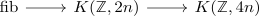

rational homotopy equivalence between the sphere and the eilenberg-maclane space
Proposition
Let $n \in \mathbb{N}$, then the maps
\begin{align*}
S^{2n+1} \rightarrow& K(\mathbb{Z},2n+1)
S^{2n} \rightarrow& \mathrm{fib}(K(\mathbb{Z}, 2n) \xrightarrow{(-)^2} K(\mathbb{Z}, 4n))
\end{align*}
Proof
a) odd case, i.e. $2n +1$
using eilenberg-maclane space is simple & nilpotent cohomology sphere is equivalent to a sphere it suffices to give a cohomology iso. but we can compute the rational cohomology of both sides (cf. rational cohomology of the integral eilenberg MacLane space) so the map above is an isomorphism
b) even case, i.e. $2n$
Consider the cohomological serre spectral sequence

and the
Then the cohomological serre spectral sequence shows that
\begin{align*}
H^k(\mathrm{fib}, \mathbb{Q}) =&
\begin{cases}
\mathbb{Q} & \mbox{if } 2k = 0 \\
\mathbb{Q} & \mbox{if } 2k = n \\
\end{cases}
\end{align*}
So the map
\begin{align*}
S^{2k} \rightarrow K(\mathbb{Z}, 2k)
\end{align*}
is a rational equivalence between anima.
Hence by explicit description of the R-localization of a simple and connected anima this shows
\begin{align*}
\pi_n(S^n) \otimes \mathbb{Q} \cong& \mathrm{fib}(K(\mathbb{Z},2n) \rightarrow K(\mathbb{Z},4n)) \otimes \mathbb{Q}
\end{align*}